Part 3 · Optional Deep Dives
This lesson follows Lesson 10. There you used an MCP server somebody else had registered. Here you register one yourself, in front of Microsoft Entra ID. Most of your clients run Entra ID, so this is the demo they will ask you for. It needs your own tenants and your own admin rights, so it is a runbook to work through after the day.
🚧 Draft. This page is a first transcription of a runbook that worked in one tenant. Names, URLs and menu labels will differ in yours, and Microsoft moves its portal menus often. Anything still unconfirmed is marked below. Tell the workshop team what breaks and this page gets corrected.
🔑 What you need before you start. Four things, and you cannot borrow any of them from the workshop:
The gap this closes. In Lesson 10 the MCP server was already registered, the policy already existed, and the tool looked up public information about a domain. In front of a client, all three of those are your job. Their directory is Entra ID. Microsoft publishes an MCP server over that directory, so an agent can read users, groups and policies through it. A directory is exactly the kind of system a security team wants brokered rather than handed to an agent.
Five moving parts. Get them straight before you start clicking, because four of them have similar names:
| Part | What it is | Where it lives |
|---|---|---|
| App registration | An OAuth client that is allowed to read the Entra MCP server. It has a client ID and a secret. | Entra ID |
| Microsoft MCP Server for Enterprise | Microsoft's own MCP server over your tenant data. You do not install it. You point at it. | Microsoft |
| Custom MCP server | Idira's record of that server. This is where the app registration's secret is held. | Idira |
| Managed AI agent | The identity your agent presents to the Broker. Its own client ID and secret. | Idira |
| Access policy | Decides which user, through which agent, may run which tool. | Idira |
The Entra MCP server exposes three tools. Idira renames them with the server's own name on the end,
the same way analyze_domain became mcp__idira-broker__analyze_domain in Lesson
10:
| Tool | What it does |
|---|---|
microsoft_graph_get | Runs a read against Microsoft Graph. This is the one that fetches data. |
microsoft_graph_list_properties | Lists the properties available on an entity, such as a user or a group. |
microsoft_graph_suggest_queries | Suggests the query to run for a question. |
Twelve steps in three places. Steps 1 to 6 are yours as the Entra administrator, 7 to 10 as the Idira administrator, and 11 and 12 as the user. Do them in order. Tick each one off as you go.
Register an app for your MCP client
Sign in to entra.microsoft.com as your Global Administrator account.
Use the search bar at the top of the page rather than the sidebar. Type
App registrations and pick it under Services. Microsoft rearranges the
sidebar; the search bar stays where it is.
Click + New registration and fill in three fields:
| Field | Set it to |
|---|---|
| Name | Anything readable, for example My-MCP-Client-App |
| Supported account types | Accounts in this organizational directory only (Single tenant) |
| Redirect URI | Web, then http://localhost |
Click Register. On the Overview page, copy two values into a scratch file:
The real redirect URI comes from Idira in step 7. http://localhost is a placeholder
so the form saves.
Create an OAuth client secret
In the app's left menu, click Certificates & secrets, then + New client secret. Give it a description and an expiry, and click Add.
Copy the Value column now. It hides for good once you leave or refresh the page.
🚨 This secret can read your whole directory. It goes into Idira in step 7 and nowhere else. Do not paste it into a chat window, a command line, or a screenshot you share. If you lose it, delete it and make another one.
You now have three values: the tenant ID, the client ID and this secret.
Add the nine read scopes
In the app's left menu, click API permissions, then + Add a permission. Open the APIs my organization uses tab and search for Microsoft MCP Server for Enterprise.
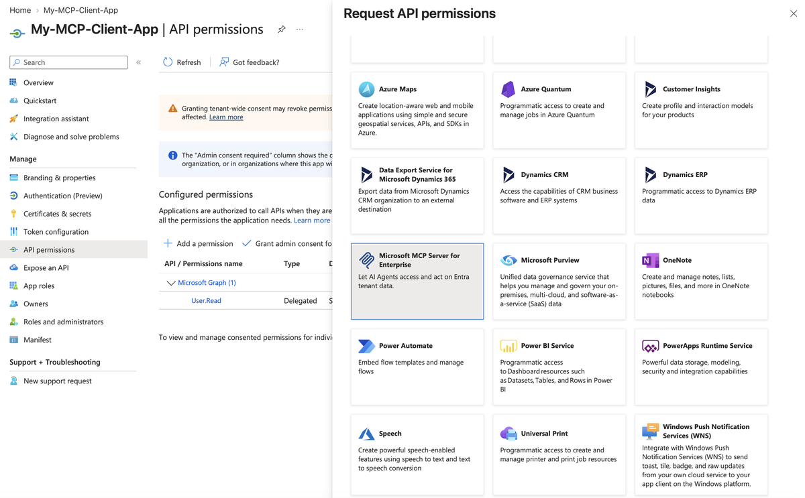
Choose Delegated permissions. A person signs in in step 11, so the agent acts as that person.
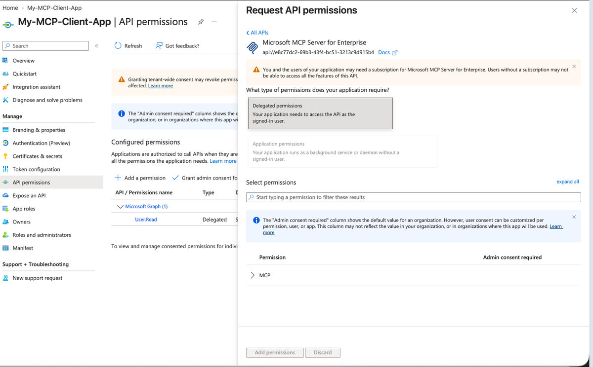
Tick these nine, all under the MCP group. They are enough for the queries in step 11:
MCP.Domain.Read.AllMCP.Group.Read.AllMCP.GroupMember.Read.AllMCP.Organization.Read.AllMCP.OrgContact.Read.AllMCP.Policy.Read.AllMCP.Reports.Read.AllMCP.User.Read.AllMCP.UserAuthenticationMethod.Read.All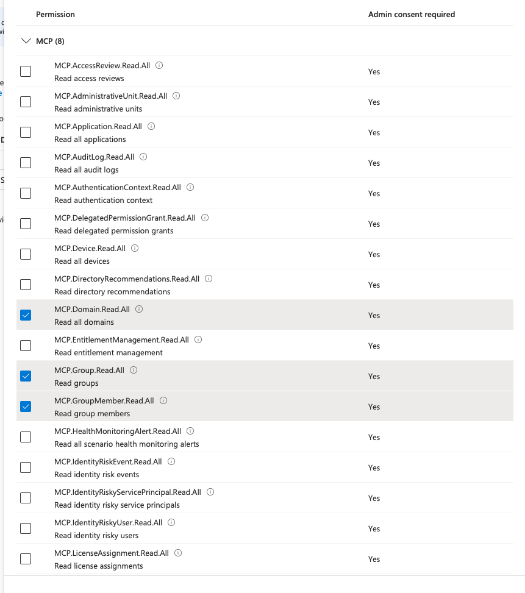
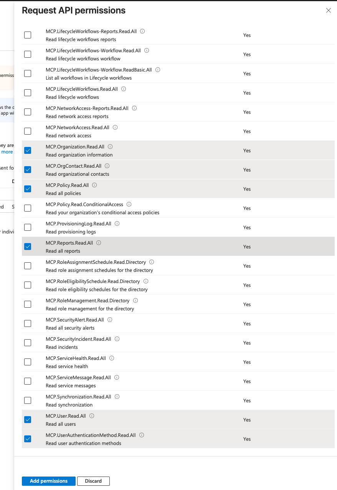
📖 Every one of them ends in Read. The Entra
MCP server is read-only. Say that early in a client conversation, because the first question is
always whether the agent can change the directory.
Grant admin consent
Still on API permissions, click Grant admin consent for [your tenant] and confirm with Yes. Every row in the Status column should turn into a green tick.
It often fails the first time:
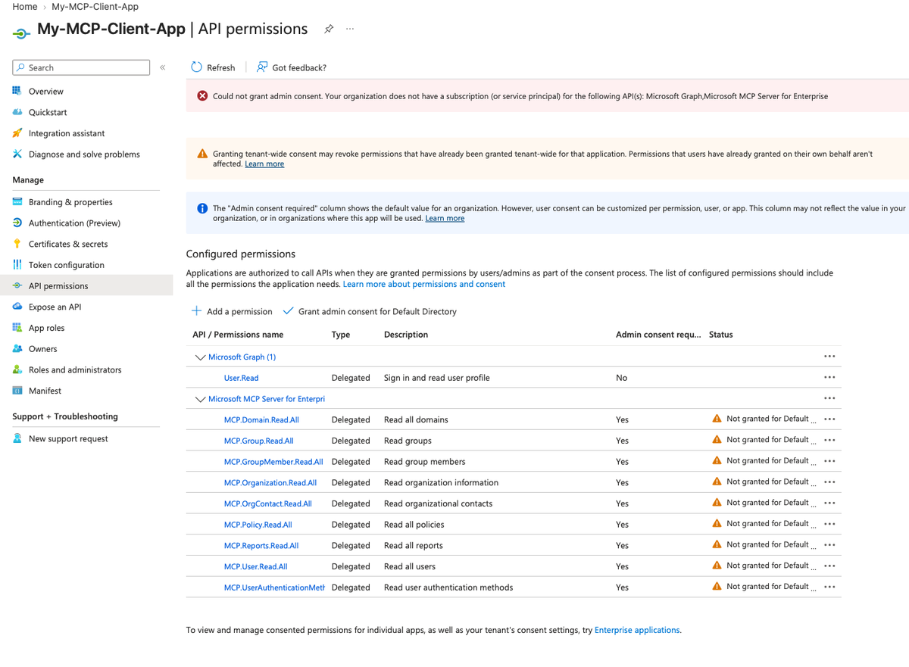
The API has no service principal in your tenant yet. A service principal is the local record of an application. The portal button cannot consent to something that has no local record, so you create the record first. Any one of these three does it. Pick whichever you already have open.
Option 1, Cloud Shell. Click the Cloud Shell icon >_ at the top
of the portal, choose Bash or PowerShell, and run this with your own client ID:
az ad app permission admin-consent --id <YOUR_CLIENT_ID>Option 2, a consent URL. Put your tenant ID and client ID into this address and open it in a new tab, then sign in and click Accept:
https://login.microsoftonline.com/<TENANT_ID>/adminconsent?client_id=<CLIENT_ID>Option 3, Entra PowerShell. Two commands. The second one creates the service principal and grants the permissions in one go:
Connect-Entra -Scopes 'Application.ReadWrite.All', 'Directory.Read.All', 'DelegatedPermissionGrant.ReadWrite.All'Grant-EntraBetaMCPServerPermission -ApplicationName 'My-MCP-Client-App'Refresh the API permissions page afterwards. The amber warnings become green ticks.
🚧 To be confirmed. Whether the Entra MCP server needs a
particular Microsoft licence, or preview enrolment, in your tenant: <TBD>. One
run also needed Azure Resource Manager permissions added to the admin account before consent
worked. If all three options above still fail, register the MCP application in your tenant
directly and try again.
Create two test users, both Global Reader
Create two ordinary users in Entra ID. Name them for what they are about to prove, for example a full privilege user and a limited privilege user.
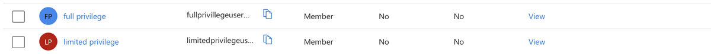
Assign Global Reader to both of them. Then sign in as each one once, in a private browser window, to clear the first-time password prompt.
✅ Give both of them the same Entra role on purpose. In step 12 one of them gets refused. Because their directory permissions are identical, the refusal can only have come from the Idira policy. That is the demo. If you give them different Entra roles, you have proved nothing about Idira.
Federate Entra ID to Idira (optional)
Skip this and the demo still works. Create the two users in Idira Cloud Directory instead, and use those in the policies in steps 9 and 10.
Do it if you want the same Entra accounts to sign in to Idira, which is what a client will have. It is a SAML 2.0 trust with Entra ID as the identity provider and Idira as the service provider.
In Entra ID. Go to Enterprise applications > New application > Create your own application. Name it, and choose Integrate any other application you don't find in the gallery. Under Manage, open Single sign-on and choose SAML. Download the Federation Metadata XML.
In Idira. Go to Settings > Users > Identity Providers and click Add. Name it, then upload that XML under Inbound Metadata. Switch to Outbound Metadata and copy Idira's SP Entity ID and Assertion Consumer Service (ACS) URL.
Back in Entra ID. Edit the basic SAML configuration. Paste the SP Entity ID into Identifier and the ACS URL into Reply URL. Then check the name identifier:
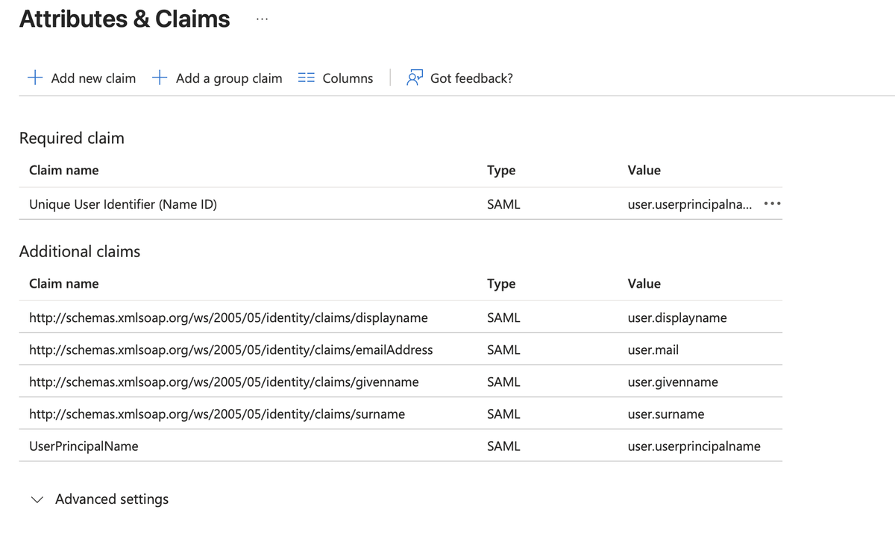
user.userprincipalname or user.mail, whichever matches the login
attribute in Idira. A mismatch here is the usual cause of a failed sign-in.Assign your two users to the application. Then back in Idira, open Federation Rules to map the incoming claims, and Settings > Users > Identity Providers > Routing Rules to send your domain to Entra ID.
Test it in a private browser window: open your Idira tenant URL and sign in as one of the two users.
Register the Entra MCP server
Sign in to your own Idira tenant. Go to Manage > Inventory > AI > MCP Servers and add a custom MCP server.
Give it a readable name. The Server URL is Microsoft's, the same for every tenant:
https://mcp.svc.cloud.microsoft/enterpriseClick Discover.
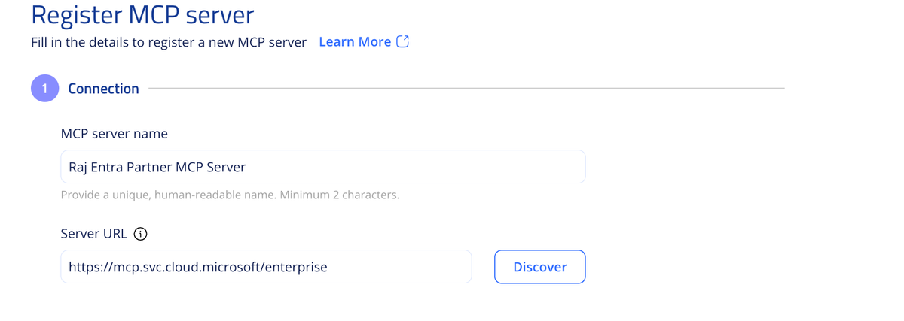
It comes back as OAuth 2.1. Keep the recommended option, Keep the MCP server's OAuth app in Idira. That is the option where Idira holds the secret and your agent never sees it.
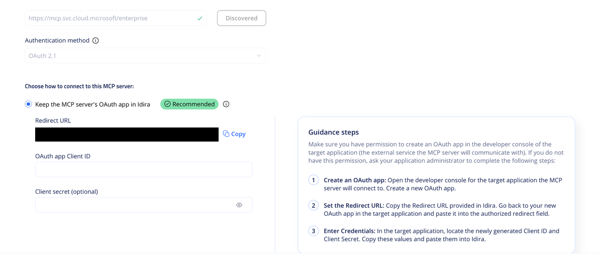
Set a category, add yourself as owner, and click Register.
The redirect URL Idira gave you looks like this. The tenant and the server name are yours:
https://<your-tenant>.data.aigw.cyberark.cloud/mcp/<server-name>/OAuth2/CallbackNow go back to Entra ID. Open your app registration, then Authentication, and add that URL as a Web redirect URI:
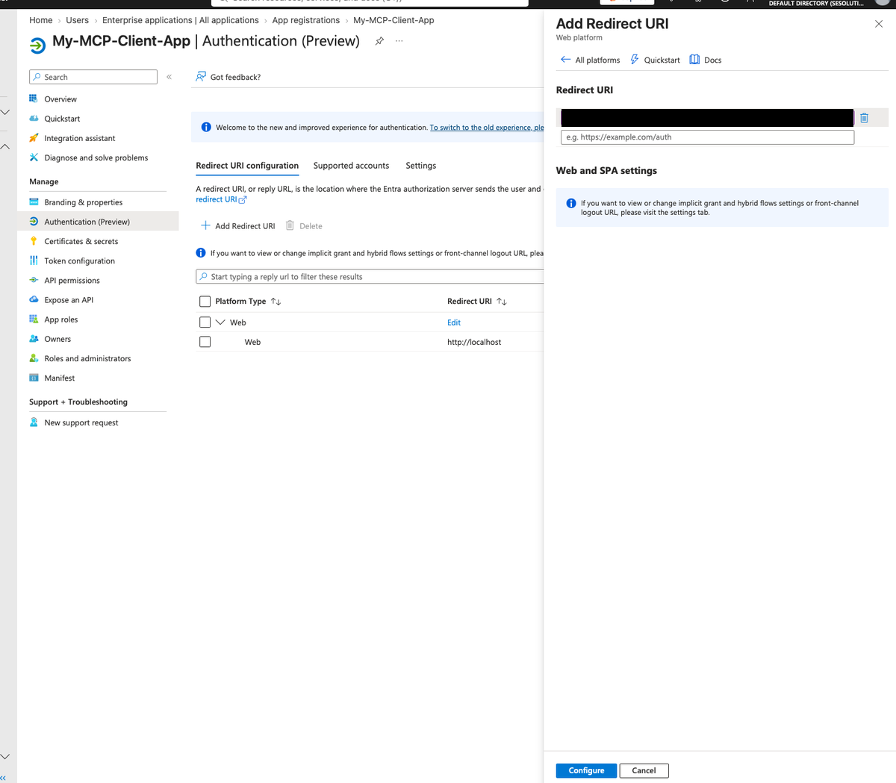
http://localhost from step 1. You can delete the
localhost one.🧭 Skip this and step 11 fails. The browser will say the redirect URI does not match. That error comes from Entra ID, not from Idira, so people spend a long time looking in the wrong console.
Register a managed AI agent
Go to Manage > Inventory > AI > Managed AI Agents and register one. This is the same kind of record you read in Lesson 10, step 5.
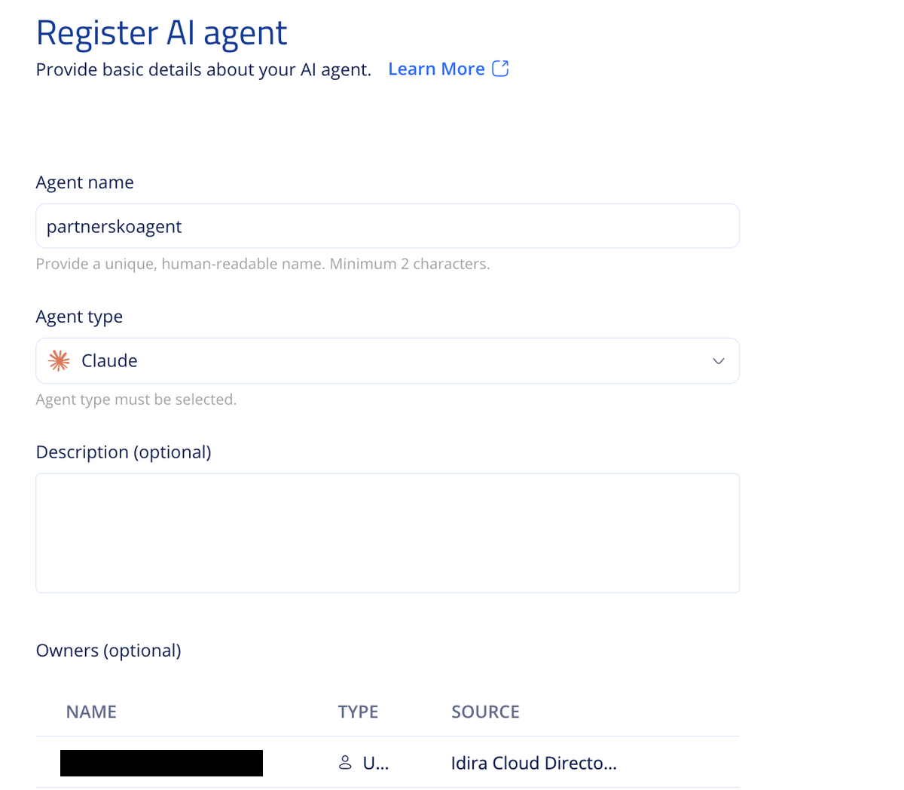
It issues a Client ID and a Client secret. Save both. The secret is shown once.
🪪 This pair is an identity, not a key to the directory. Exactly as in Lesson 10. It says which agent is calling. It grants nothing on its own, which is why the audit log can name the agent and the user separately.
Write the full-privilege policy
Go to Manage > Policies > AI agents access and add a policy. This is the screen you could only read in Lesson 10. It has the same four parts.
1 · General details. Name it after what it allows, and own it yourself.
2 · MCP servers and tools. Add the server from step 7:
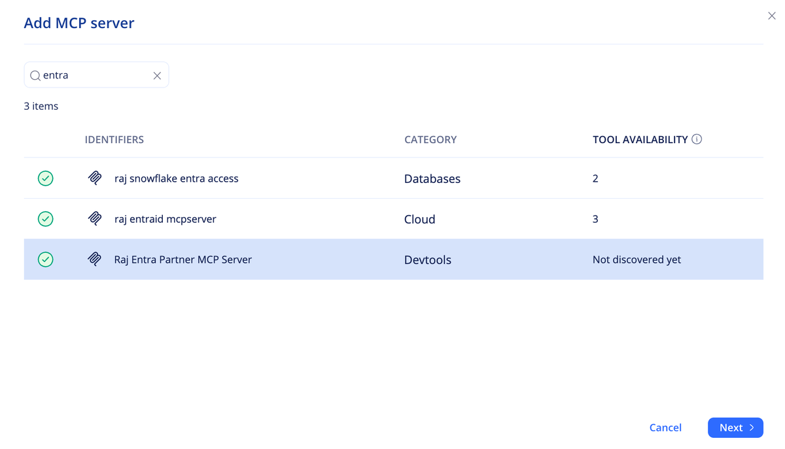
Turn on Allow all current and future tools for this one:
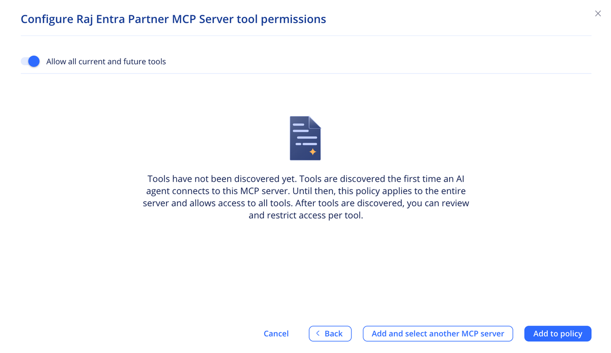
🧭 Empty tool list? Idira discovers the tools the first time an agent connects. If the three tools are not there yet, finish step 11, then come back and finish this policy.
3 · AI agents. Select the agent from step 8:
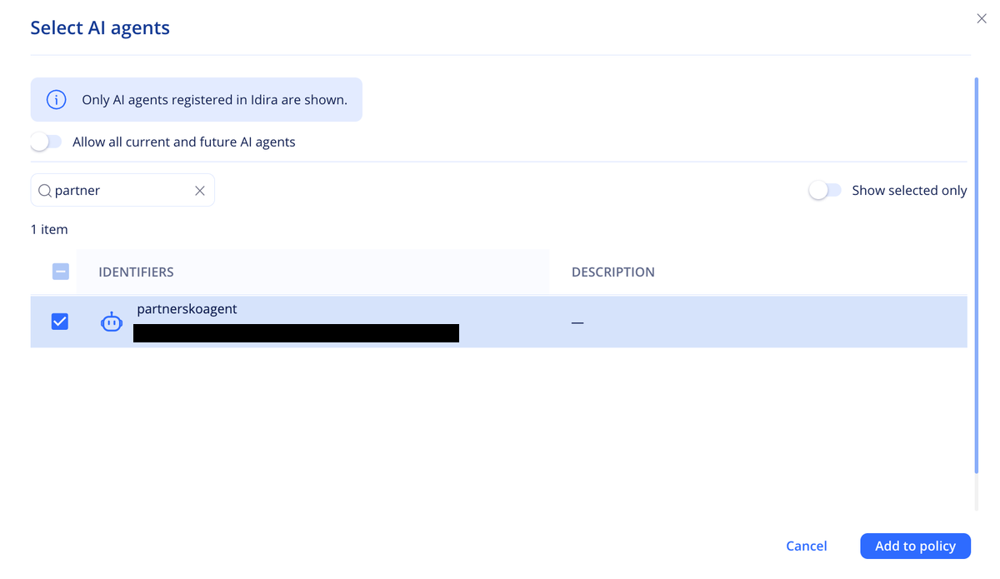
4 · Users and roles. Add the full-privilege user only:
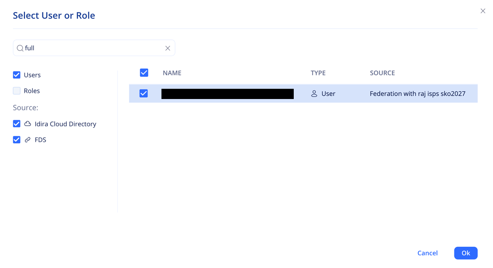
Save the policy.
Write the limited-privilege policy
Add a second policy. Same server, same agent, two differences.
Difference one. Leave Allow all current and future tools off,
and tick microsoft_graph_get only:
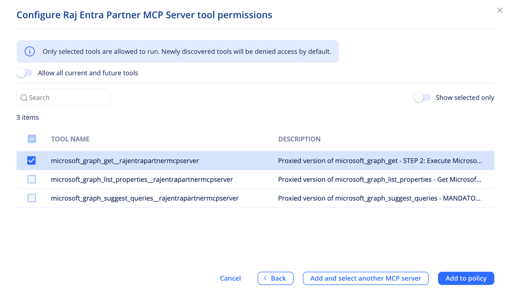
Difference two. Under users, add the limited-privilege user instead.
Save it. The summary should read 1 of 3 tools allowed:
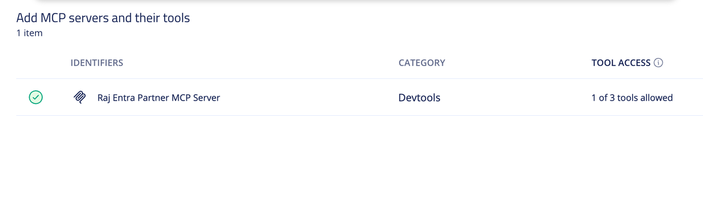
Connect your agent, as the full-privilege user
In Idira, open your MCP server and go to Connection Details. Pick the agent from step 8 in the dropdown, and its client ID appears:
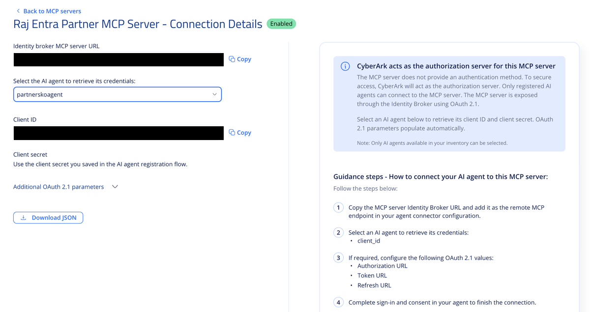
That broker URL has the same shape as the one in Lesson 10:
https://<your-tenant>.data.aigw.cyberark.cloud/mcp/<server-name>Add it to Claude Code. One line, with your own URL and client ID:
claude mcp add --transport http --scope user entra-mcp https://<your-tenant>.data.aigw.cyberark.cloud/mcp/<server-name> --client-id <agent-client-id> --client-secret--client-secret takes no value on the line. It prompts you, so the secret stays out
of your shell history.
Start the agent and open the MCP panel:
claude/mcpSelect entra-mcp and authenticate. Your browser opens. Sign in as the
full-privilege Entra user and approve. Back in the terminal, /mcp now
lists the three tools.
Ask it something. One line each:
List all users in Entra ID.Which user am I connected to Entra ID as?Get the employee hire date and the on-premises distinguished name for the full privilege user.What properties are available on the Entra ID group entity?All four work. You typed no directory credential, and the app registration's secret never left Idira.
🖥️ Claude desktop or Claude web instead. This needs a Claude account of your own, which the workshop does not give you. Go to Settings > Connectors > Add custom connector. The name is yours, the Remote MCP server URL is the broker URL, and the client ID and secret go under Advanced settings.
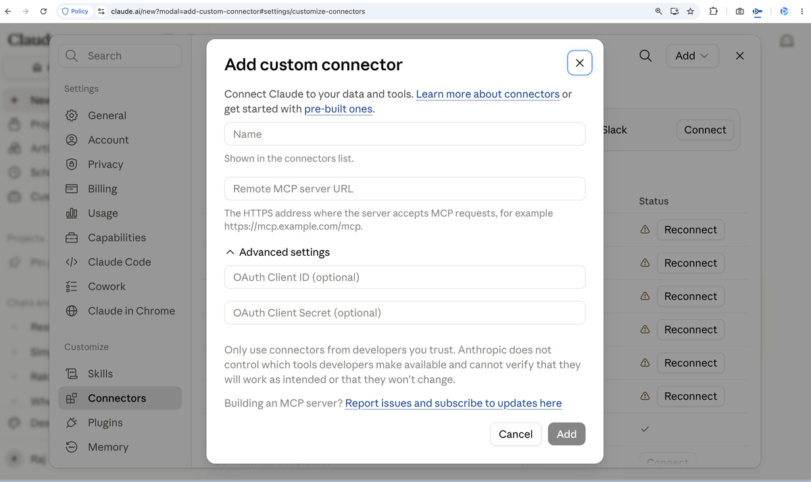
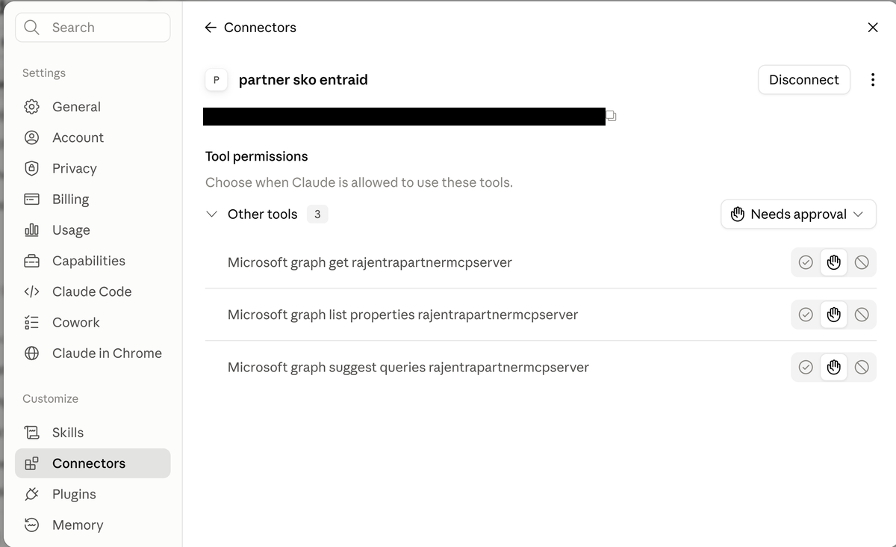
Get refused as the limited user, then read the log
Now change who you are. Sign out of both your Idira tenant and your Entra tenant, in the browser.
Then clear the agent's authentication. In Claude Code, run /mcp, select
entra-mcp, and clear its authentication. If you cannot see that option, remove the
server and add it again:
claude mcp remove entra-mcpAuthenticate again, this time as the limited-privilege user. Then run the same questions:
List all users in Entra ID.What properties are available on the Entra ID group entity?The first one works, because microsoft_graph_get is the tool you allowed. The second
needs microsoft_graph_list_properties, which this user has no policy for, so it is
refused. The agent may try another tool instead. That is normal, and each attempt is logged.
Now go to the Audit and Reports space in Idira. Set the time range to the last 24 hours and the service name to Secure AI Agents.
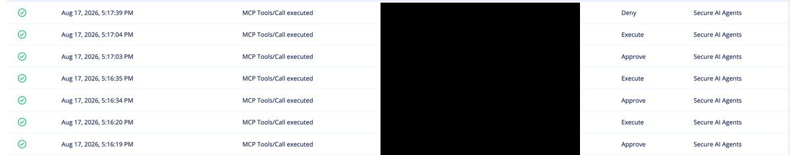
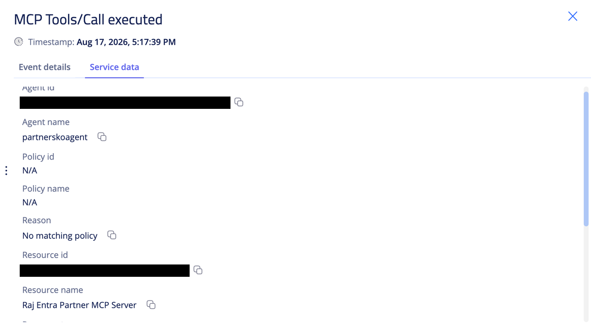
✅ Two users, one agent, one server. Identical Entra roles, and one of them was refused. The only difference was a tick in an Idira policy, and the log says so in words a client can read.
The client version of what you just built. Six beats, in their own directory, which is why it lands harder than Lesson 10.
Two questions on where the limits live. Pick an answer to see why it is right or wrong.
Both test users are Global Reader in Entra ID, yet one gets refused. Who refused it?
Global Reader can read all of it, and both users have it. That is why you gave them the same role in step 5. Try again.
✅ Correct. The two users are identical in Entra ID, so the only thing left is the Idira policy. The audit record says No matching policy, which is deny-by-default in one line.
Nothing was refused for cost. The refusal happened at the Broker, before the call reached Microsoft. Try again.
Where does the app registration's client secret from step 2 end up?
Your agent's configuration holds the agent's client ID and secret, which grant nothing on their own. The directory secret is not there. Try again.
That is the pattern the runbook replaces. An environment variable on a laptop is a long-lived directory credential in a place nobody audits. Try again.
✅ Correct. You pasted it into Idira in step 7 and never used it again. The Broker holds it and adds it to each call, so your agent can reach the directory while holding nothing that reads the directory.
Each lesson names the risk it just demonstrated and the Palo Alto Networks product that answers it.
🧨 The risk you just saw. An agent read the corporate directory. Two users with the same directory role got different answers, and nothing in the directory decided that.
What answers it
🗣️ “Your directory is the crown jewels. Ask who decided an agent could read it, and where that decision is written down.”
No matching policy. The refusal is a
record, with the agent, the user, the tool and the reason. A tool that simply returns an error tells
an auditor nothing.✅ You have now done both halves. Lesson 10 was the demo with everything prepared for you. This page is the same demo in a tenant you own, in front of the system a client cares most about. Swap Entra ID for their ticketing system or their code host and the twelve steps barely change.